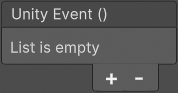
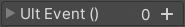

|
|
|  |  |
| Serializable Event System Feature Comparison | UnityEvents |
UltEvents |
|---|---|---|
| Features | ||
| Persistent listeners (serialized) | ||
| Dynamic listeners (non-serialized) | ||
| Parameter types: bool, int, float, string, UnityEngine.Object | ||
| Parameter types: Enum (regular and flags), Vector (2, 3, 4), Quaternion, Rect, Color, Color32 | ||
| Unlimited parameter count | [1] | |
| Allows methods with non-void return types | ||
| Use values returned from earlier calls as parameters | ||
| Public methods | ||
| Non-public methods | ||
| Static methods | ||
| Source code included | ||
| Disable specific listeners entirely or just in Edit Mode | [2] | |
| User Interface | ||
| Compact and collapsible GUI | ||
| Parameterless functions only take a single line | ||
| Function parameter names are displayed | ||
| Customizable display options | ||
| Reorderable function list | ||
| Keyboard shortcuts (Copy, Paste, Add, Delete) | ||
| Context menu commands (Invoke, Clear, Copy, Paste) | ||
| Select a specific component when there are multiple of the same type | ||
| Button to quickly find a similarly named method if the target is missing | ||
| Displays dynamic (non-serialized) listeners in the GUI | ||
[1] UnityEvents only support methods with 0 or 1 parameters while UltEvents can call methods with any number of parameters.
[2] UnityEvents have a dropdown menu for each persistent listener to select when it should be executed. The default is Runtime Only which will skip that listener if the event is invoked in Edit Mode in the Unity Editor. Off can also be used to disable that listener entirely. In the development of UltEvents this feature was deemed to not be particularly useful so it was not implemented to avoid it's (admittedly very minor) performance cost. If you don't want an event to be triggered in Edit Mode, then don't trigger it.
Performance
UltEvents andUnityEvents both have significantly worse performance than regular C# Delegates likeSystem.Action. If you only want an event that can be used in code without wanting to set it up in the Inspector or save it as part of a scene/prefab, then you should simply use regular delegates.- When calling methods with no parameters,
UltEvents are slightly faster thanUnityEvents. - When calling methods with one parameter,
UnityEvents are slightly faster thanUltEvents. - Methods with more than one parameter simply cannot be called by
UnityEvents. - The package includes some simple performance testing scripts in the
UltEvents.Benchmarksnamespace.